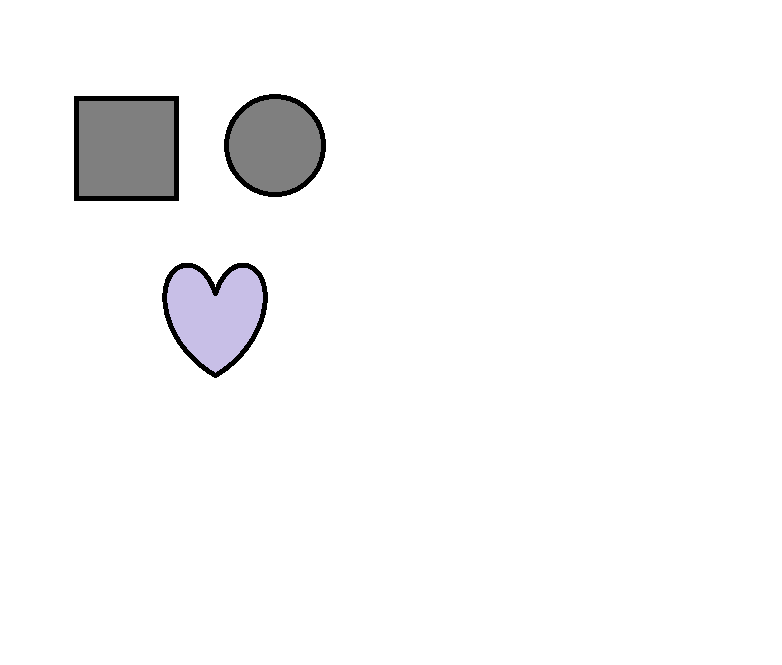

NCT Official Instagram NCT U ‘YESTODAY’ Teaser👇
youtu.be/g1RcPhn0w2s

내가 제일 좋아하는 책은 태백산맥입니다. 내가 제일 좋아하는 영화는 이안감독의 와호장룔입니다. 내가 가장 좋아하는 뭉크의 절규입니다.
윤동주 시인은 죽는날까지 하늘을 우러러 한 점 부끄럼이 없기를
html5에서는 frame과 table이 사용되지 않는다.
html5에서는 semantic tag들이추가되었습니다.
html5에서 재정의된 태그는 cite, del, q등이 있습니다.
W3Schools.com - the world's largest web development site.
Copyright 2018 by Yookyung
To learn AJAX, you must be familiar with the XML
다음은 오른쪽에서 왼쪽으로 텍스트입니다. דוגמה abcdefg
鄭 愈 暻